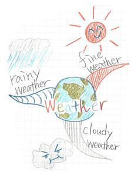
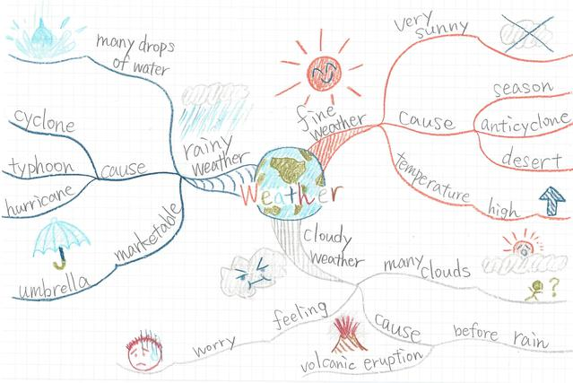
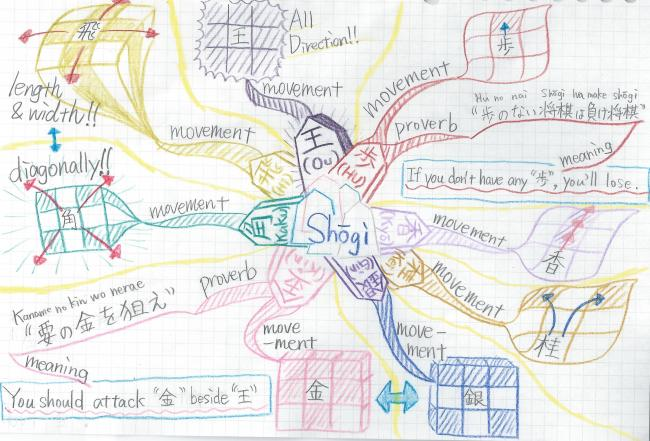

Drawing of MindMap
- Draw Central theme!!
-
Hi!! My name is Mai-Map!! Now I start to explain how to write Mind-Map!!
First , you draw theme in central.
In this example , the theme is “Whether”
So , the central word may be “Whether”.
And use some colors orpainting.In this example,a picture of the earth is it.
- Associate , and lengthen branch!!
-
Then, you lengthen a branch from a central theme and will write what you can associate with a theme.
Let's write the branch to stretch out from the center with a curve thickly!!
In this expample, “Whether” is a theme.
So what I can associate has “Fine” and “Cloudy”, “Rainy”.
 - Complete
-
You lengthened branches like the above.
Next , make the branches forked more and more.
And the direction is to periphery.
In this example, I associated "very sunny"with "fine whether".
And I wanted to think its cause and temperature,so that I wrote new themes,"cause" and "temperature".
So that you can understand easily, you should decide the branch's color like"The branch from "Fine" is red".
This is finished Mind-Map!!
While you are beginer, don'tmind meaning and relation ofwords.
You should be careful only using colors and paintings.
I wrote the cruxesof writing Mind-Map!!Look it. Good Bye.
Point of Writing Mind-Map
- See the point
-
I summarized how to draw MindMap.
・Draw theme in center, and write what you can associate with on branches from the theme !.
・Lengthen branches to periphery from the center !.
・The color of branches is same to its root. And lengthened branches are narrower than its root !.
・Use many colors and paintings in center theme and letters. If you use Mind-Map for study, it is more important to
use colors so that you can understand easily !.
When we draw MindMap, let's keep it in mind to devise +1 in the MindMap which I draw before one! For example, I draw a three-dimensional picture and use a lot one color of color and…Everybody devises only oneself and draw Only one MindMap in the world .
It is the mind map which described the way of moving of piece of the shogi.Describe the movement of each piece in unique form.